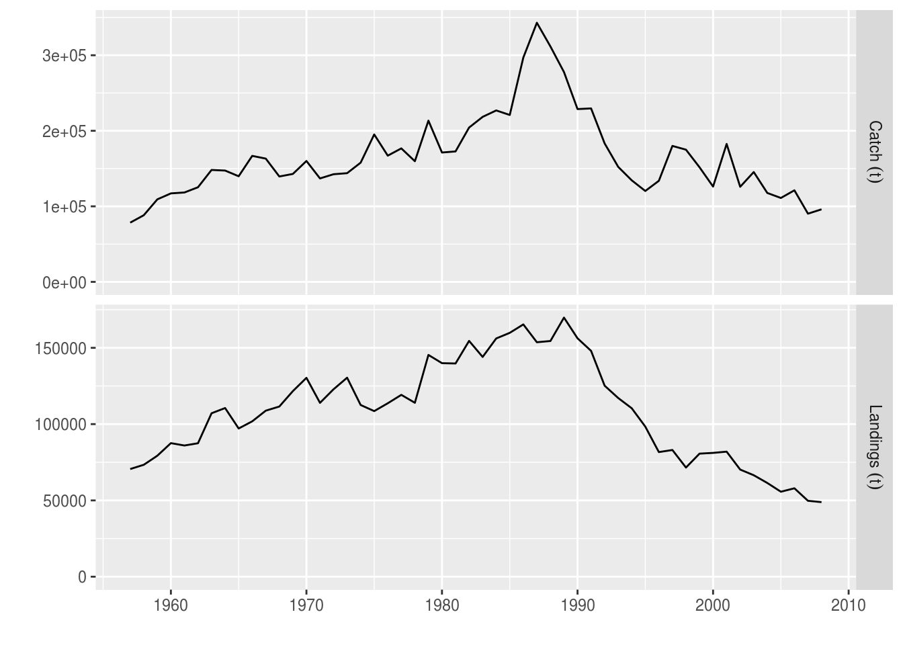

A quick introduction to FLR
18 August, 2017
The Fisheries Library in R (FLR) is a collection of tools for quantitative fisheries science, developed in the R language, that facilitates the construction of bio-economic simulation models of fisheries systems as well as the application of a wide range of quantitative analysis.
FLR builds on the powerful R environment and syntax to create a domain-specific language for the quantitative analysis of the expected risks and impacts of fisheries management decisions. The classes and methods in FLR consider uncertainty an integral part of our knowledge of fisheries system. […]
Required packages
To follow this tutorial you should have installed the following packages:
You can do so as follows:
install.packages(c("FLCore"), repos="http://flr-project.org/R")The FLCore package defines a 6D array as the basic data structure for FLR. This class, called FLQuant, is used to store most numeric inputs and output.
library(FLCore)
library(ggplotFL)Loading your data
The first step in an analysis is to get the relevant data into the system. We will need to construct objects of certain FLR classes, but first data is loaded into the R session using any of the tools available in the language: read.csv for CSV files, readVPA and others for fisheries legacy file formats, …
In this example we will create an object of class FLStock, a representation of both inputs and outputs involved in fitting a stock assessment model, from a CSV file containing a table with five columns:
- slot, the name of the input quantity, in this case either landings at age, landings.n, weight-at-age in the landings, landings.wt, and the same quantitieds for discards, discards.n and discards.wt.
- age and year
- data, the numeric values themselves.
- units, a character string for the units of measurement employed: kg and 1000 in this case for kilograms and thousands.
The file is downloaded into a temporary folder, and uncompressed. Simply change the value of dir to save the file in another folder.
dir <- tempdir()
download.file("http://www.flr-project.org/doc/src/ple4.csv.zip", file.path(dir, "ple4.csv.zip"))
unzip(file.path(dir, "ple4.csv.zip"), exdir=dir)The CSV file can now be loaded as a data.frame using read.csv and inspected
dat <- read.csv(file.path(dir, "ple4.csv"))
head(dat)| slot | age | year | data | units |
|---|---|---|---|---|
| discards.n | 1 | 1957 | 32356 | 1000 |
| discards.n | 2 | 1957 | 45596 | 1000 |
| discards.n | 3 | 1957 | 9220 | 1000 |
| discards.n | 4 | 1957 | 909 | 1000 |
| discards.n | 5 | 1957 | 961 | 1000 |
| discards.n | 6 | 1957 | 25 | 1000 |
The df data.frame contains the time series of landings and discards at age, in thousands, and the corresponding mean weights-at-age, in kg, for North Sea plaice (Pleuronectes platessa, ICES ple.27.420).
We can create an object to store the landings-at-age data by subsetting it from the data.frame
landn <- subset(dat, slot=="landings.n", select=-slot)and then convert into an FLQuant using
landsn <- as.FLQuant(landn)The object can now be inspected and plotted using the FLR-defined methods
summary(landsn)An object of class "FLQuant" with:
dim : 10 52 1 1 1 1
quant: age
units: 1000
Min : 0
1st Qu.: 4548
Mean : 28141
Median : 14030
3rd Qu.: 40536
Max : 274209
NAs : 0 %plot(landsn)
In a similar way, we can now convert the input data.frame, containing data for four data elements, as specified in the slots column, into an FLStock object, ple4
ple4 <- as.FLStock(dat)
summary(ple4)An object of class "FLStock"
Name:
Description:
Quant: age
Dims: age year unit season area iter
10 52 1 1 1 1
Range: min max pgroup minyear maxyear minfbar maxfbar
1 10 10 1957 2008 1 10
catch : [ 1 52 1 1 1 1 ], units = NA
catch.n : [ 10 52 1 1 1 1 ], units = NA
catch.wt : [ 10 52 1 1 1 1 ], units = NA
discards : [ 1 52 1 1 1 1 ], units = NA
discards.n : [ 10 52 1 1 1 1 ], units = 1000
discards.wt : [ 10 52 1 1 1 1 ], units = kg
landings : [ 1 52 1 1 1 1 ], units = NA
landings.n : [ 10 52 1 1 1 1 ], units = 1000
landings.wt : [ 10 52 1 1 1 1 ], units = kg
stock : [ 1 52 1 1 1 1 ], units = NA
stock.n : [ 10 52 1 1 1 1 ], units = NA
stock.wt : [ 10 52 1 1 1 1 ], units = NA
m : [ 10 52 1 1 1 1 ], units = m
mat : [ 10 52 1 1 1 1 ], units =
harvest : [ 10 52 1 1 1 1 ], units = NA
harvest.spwn : [ 10 52 1 1 1 1 ], units =
m.spwn : [ 10 52 1 1 1 1 ], units = To complete this FLStock object we will need to specify the natural mortality, m, in this case as a constant value of 0.1 for all ages and years,
m(ple4) <- 0.1the proportion of natural and fishing mortality that takes place before spawning, assumed to be zero in both cases,
m.spwn(ple4) <- harvest.spwn(ple4) <- 0and the maturity at age, as the proportion mature, as a vector repeated for all years.
mat(ple4) <- c(0, 0.5, 0.5, rep(1, 7))We now must compute the overall landings and discards, in biomass, from the age-disaggregated values,
landings(ple4) <- computeLandings(ple4)
discards(ple4) <- computeDiscards(ple4)and then the catch slots from both landings and discards
catch(ple4) <- computeCatch(ple4, slot="all")We finalize by specifying the fully selected age range, used in the calculation of an overall index of fishing mortality, for example as the mean, using fbar(), or as the maximum value, using fapex() across those ages. This information is part of the object’s range.
range(ple4, c("minfbar", "maxfbar")) <- c(2, 6)If we now inspect the resulting object we can see that all calculated slots have been assigned the corresponding units of measurement, except for those that will hold the estimates coming from a stock assessment model: stock, stock.n and stock.wt for the estimates of abundance, and harvest for the estimates of fishing mortality at age.
summary(ple4)An object of class "FLStock"
Name:
Description:
Quant: age
Dims: age year unit season area iter
10 52 1 1 1 1
Range: min max pgroup minyear maxyear minfbar maxfbar
1 10 10 1957 2008 2 6
catch : [ 1 52 1 1 1 1 ], units = t
catch.n : [ 10 52 1 1 1 1 ], units = 1000
catch.wt : [ 10 52 1 1 1 1 ], units = kg
discards : [ 1 52 1 1 1 1 ], units = t
discards.n : [ 10 52 1 1 1 1 ], units = 1000
discards.wt : [ 10 52 1 1 1 1 ], units = kg
landings : [ 1 52 1 1 1 1 ], units = t
landings.n : [ 10 52 1 1 1 1 ], units = 1000
landings.wt : [ 10 52 1 1 1 1 ], units = kg
stock : [ 1 52 1 1 1 1 ], units = NA
stock.n : [ 10 52 1 1 1 1 ], units = NA
stock.wt : [ 10 52 1 1 1 1 ], units = NA
m : [ 10 52 1 1 1 1 ], units = m
mat : [ 10 52 1 1 1 1 ], units =
harvest : [ 10 52 1 1 1 1 ], units = NA
harvest.spwn : [ 10 52 1 1 1 1 ], units =
m.spwn : [ 10 52 1 1 1 1 ], units = plot(metrics(ple4, Catch=catch, Landings=landings))
More information
Please see the Reading data into FLR tutorial for more examples on how to get your into into FLR.
Visualizing and plotting
Running a stock assessment
Exploring the stock-recruitment relationship
Estimating reference points
Forecasting undr different scenarios
References
L. T. Kell, I. Mosqueira, P. Grosjean, J-M. Fromentin, D. Garcia, R. Hillary, E. Jardim, S. Mardle, M. A. Pastoors, J. J. Poos, F. Scott, R. D. Scott; FLR: an open-source framework for the evaluation and development of management strategies. ICES J Mar Sci 2007; 64 (4): 640-646. doi: 10.1093/icesjms/fsm012.
More information
- You can submit bug reports, questions or suggestions on this tutorial at https://github.com/flr/doc/issues.
- Alternatively, send a pull request to https://github.com/flr/doc/.
- For more information on the FLR Project for Quantitative Fisheries Science in R, visit the FLR webpage: http://flr-project.org.
Software Versions
- R version 3.4.1 (2017-06-30)
- FLCore: 2.6.3.9008
- Compiled: Fri Aug 18 15:42:07 2017
License
This document is licensed under the Creative Commons Attribution-ShareAlike 4.0 International license.